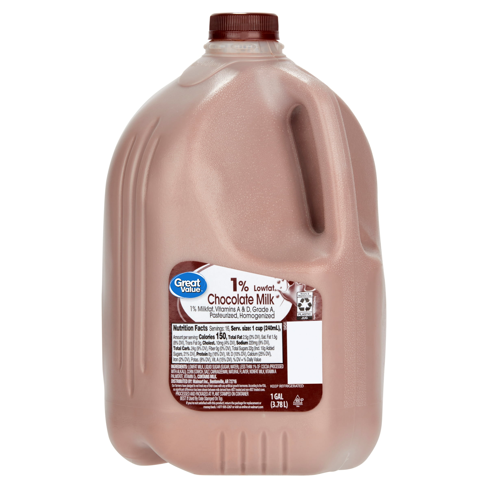

Forum Threads
Each strong question should become its own page. That gives every answer a clean URL, a title, a meta description, and a chance to rank on its own.

How to get bigger biceps
Live thread
forum-how-to-get-bigger-biceps.html
Direct answer, exercise image, structured replies, and a search-friendly slug built for exactly the kind of question people type into Google.

How many sets per week for chest growth?
Planned
next thread candidate
A good follow-up thread because the search intent is clear, the question is specific, and the answer can be expanded with examples and progress photos.
Why can’t I feel lat pulldowns in my back?
Planned
next thread candidate
Another high-intent question that can pull search traffic because the wording already matches how people ask it in search.

Best post-workout meal for muscle gain
Planned
next thread candidate
Nutrition questions can rank too, especially when the answer is practical, visual, and tied to a clear result people want.